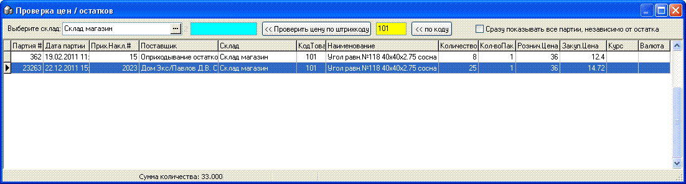

Данная возможность контекстного меню (горячая клавиша F2) дает возможность посмотреть по тому товару на котором стоит курсор актуальные партии, остатки, цены и т.д. Не администраторам доступны поля для просмотра в зависимости от прав назначенных в настройках программы. Также можно в открывшемся окне просмотреть товары отобрав их по штрихкоду, посмотреть все партии, независимо от остатка.
- 